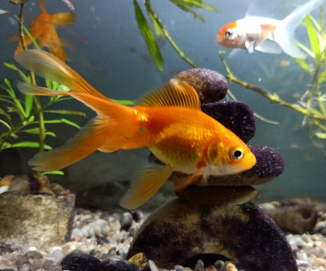

Limpa-Vidro
-
Peixe longo e fino, coberto de 23 a 24 placas ósseas que se sobrepõem substituindo as escamas. A cabeça é relativamente plana e termina com uma boca e forma de ventosa. Sua barriga é branca ou levemente amarelada. Apresenta uma faixa preta longitudinal desde sua boca até o pedúnculo caudal. Raios duros presente nas nadadeiras peitorais e dorsal, que servem como defesa contra predadores e não são raros os casos em que, ao manter peixes muito grandes junto com eles, os mesmas fiquem presos na boca do predador podendo levá-los à morte ou a infecções causadas pelos ferimentos.
Goldfish
-
Com tamanho que pode variar entre 10 e 40 cm, o peixe dourado de aquário tem dois pares de barbatanas duplas e outras três barbatanas únicas. Ele também chama a atenção por seus olhos grandes e esbugalhados e por não possuir escamas na região da face.

Betta
-
O comportamento do peixe betta costuma ser mais agressivo por ser uma espécie muito territorialista. Caso pense em ter um aquário com várias espécies, procure peixinhos mais tranquilos, como os corydoras, ottos ou tanicts.
Beijador
-
Encontrado comumente em ambiente de água lenta (lêntico) ou águas permanentes, incluindo lagos de várzeas, lagoas e pântanos. Muitas vezes encontrado sob densa vegetação aquática e águas negras. Embora espécimes selvagens são encontrados em diferentes tipos de água, dado sua grande resistência, em aquário a maioria dos espécimes provém de cativeiro e são menos tolerantes a pH muito ácido ou muito alcalino, devendo ser mantido próximo da neutralidade.
Paulistinha
-
Espécie de comportamento pacífico e comunitário, mas muito agitado. Peixes lentos ou de nadadeiras longas devem ser evitados em aquários com paulistinhas, pois poderão ser mordiscados. Deve-se manter em cardume de pelo menos seis indivíduos ou mais. Embora atinja pequeno tamanho, é uma espécie bastante ativa que nada freneticamente a todo o momento. Desta forma exige um bom espaço para nadar, devendo ser mantido em aquário com pelo menos 80 cm de comprimento.
Molinésia Gold
-
A Molinésia Gold ou Black Lyra é um peixe ornamental de aquário muito popular, são particularmente brincalhonas, alegres e muito divertidas. Comumente chamadas de Molly, os peixes molinésia podem chegar até 8 cm e vivem mais de 2 ou 3 anos em aquário.